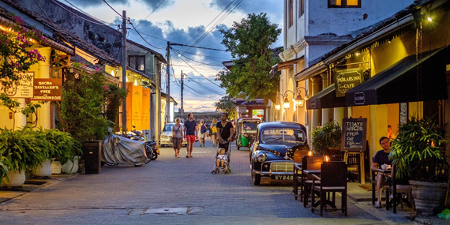

1. Galle Fort |
|  |
Galle Fort, located in the Bay of Galle on Sri Lanka's southwest coast, was first erected by the Portuguese in 1588, and then heavily strengthened by the Dutch from 1649 onwards. It is a historical, archaeological, and architectural heritage site that still has a polished aspect after more than 432 years, thanks to the refurbishment effort by the Sri Lankan Archaeological Department. The Galle fort is hands-down one of the compulsory places to visit in Galle. |
Distance from Katunayaka Airport : 150 km and it takes about 2 to 2 ½ hours |